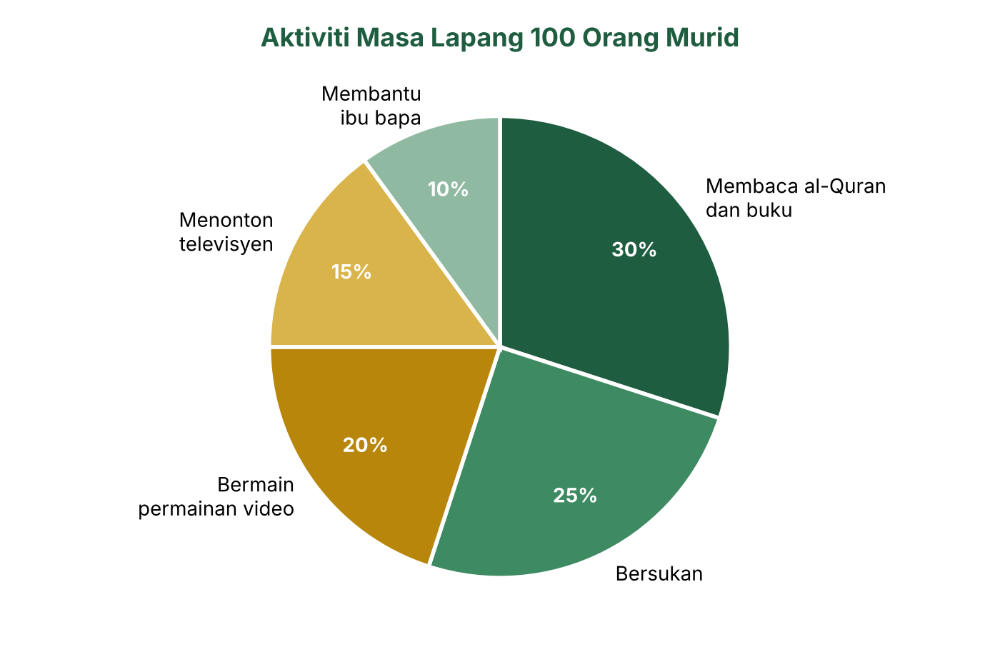
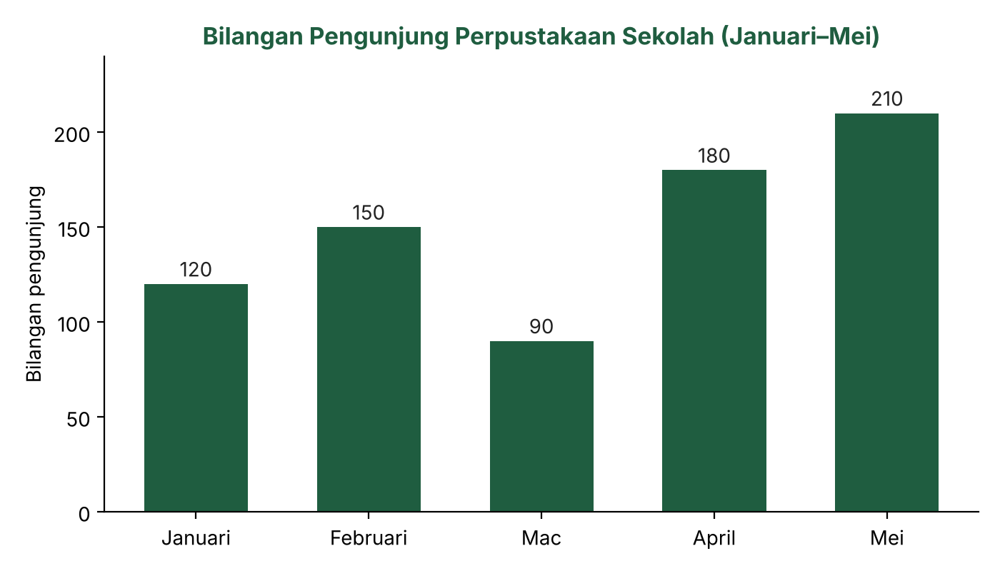

Pelajaranบทที่
Carta Pai, Graf dan Infografik
แผนภูมิ กราฟ และอินโฟกราฟิก
- อก.3/5
Carta paiแผนภูมิวงกลม

Contoh huraianตัวอย่างคำบรรยาย
Carta pai di atas menunjukkan aktiviti masa lapang 100 orang murid. Aktiviti yang paling digemari ialah membaca al-Quran dan buku, iaitu sebanyak 30 peratus. Aktiviti ini diikuti oleh bersukan (25 peratus) dan bermain permainan video (20 peratus). Seramai 15 peratus murid menonton televisyen. Aktiviti yang paling kurang dilakukan ialah membantu ibu bapa, iaitu hanya 10 peratus. Kesimpulannya, kebanyakan murid menggunakan masa lapang dengan aktiviti yang berfaedah.
Frasa bergunaวลีที่ใช้บรรยายข้อมูล
| Bahagian | Frasa |
|---|---|
| Pengenalan | Carta pai / graf di atas menunjukkan ... |
| Nilai tertinggi | ... paling tinggi / paling banyak, iaitu ... |
| Nilai terendah | ... paling rendah / paling sedikit, iaitu ... |
| Perbandingan | ... lebih tinggi / lebih rendah daripada ... |
| Perubahan | meningkat, menurun, tidak berubah |
| Kesimpulan | Kesimpulannya, ... |
Graf barกราฟแท่ง

| # | Bahasa Melayu | Maksudความหมาย |
|---|---|---|
| 1 | carta pai | แผนภูมิวงกลม |
| 2 | graf bar | กราฟแท่ง |
| 3 | infografik | อินโฟกราฟิก |
| 4 | peratus | เปอร์เซ็นต์ |
| 5 | masa lapang | เวลาว่าง |
| 6 | digemari | เป็นที่ชื่นชอบ |
| 7 | meningkat | เพิ่มขึ้น |
| 8 | menurun | ลดลง |
| 9 | pengunjung | ผู้มาใช้บริการ ผู้มาเยือน |
| 10 | kesimpulannya | โดยสรุป |
| 11 | berfaedah | มีประโยชน์ |
Latihanแบบฝึกหัด
Jawab soalan berdasarkan graf bar.ตอบคำถามจากกราฟแท่ง
- Pada bulan apakah pengunjung paling ramai?
- Pada bulan apakah pengunjung paling sedikit?
- Berapakah bilangan pengunjung pada bulan Februari?
- Adakah bilangan pengunjung meningkat atau menurun dari bulan Mac ke bulan Mei?
Lihat jawapanดูเฉลย
Mei; Mac; 150 orang; meningkat
Tulis huraian graf bar dalam lima ayat menggunakan frasa yang diberikan.เขียนคำบรรยายกราฟแท่ง 5 ประโยค โดยใช้วลีที่กำหนด
Hasilkan infografik "Adab di Masjid" dalam bahasa Melayu dengan sekurang-kurangnya lima perkara.ทำอินโฟกราฟิกเรื่อง "Adab di Masjid" เป็นภาษามลายู อย่างน้อย 5 ข้อ
Kuiz Kendiriทดสอบตนเอง
Pilih maksud yang betul. Kuiz boleh diulang; soalan dipilih secara rawak setiap kali.เลือกความหมายที่ถูกต้อง ทำซ้ำได้หลายรอบ ข้อจะสุ่มใหม่ทุกครั้ง
Kad Imbasบัตรคำ
Sentuh kad untuk melihat maksudแตะบัตรเพื่อพลิกดูความหมาย